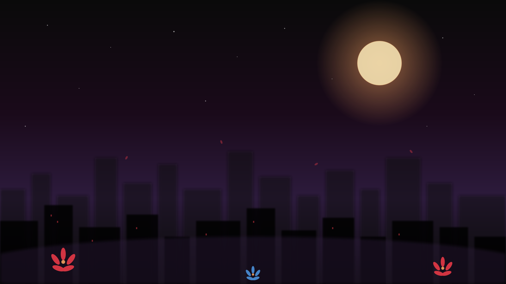

登場人物 KARAKTERLER
Hikayenin kahramanları ve gölgeleri

"Her ölüm bir iz bırakır. Ama bazıları... bazıları çiçek açar."
Seri tamamlandı — 50 bölüm, 5 arc
Beş yıl sonra. Yuki, Ren ve küçük Yuriko. Mezarlıkta bir veda. Ve yeni bir başlangıç.
Yuki Altın Çiçeği bırakır. Ailesine veda eder. Ve yeni bir hayata adım atar.
Yuriko ve Sōren, Yuki'ye son sırrı verir: Bir bebek. Ve bir vasiyet.
Hikayenin kahramanları ve gölgeleri